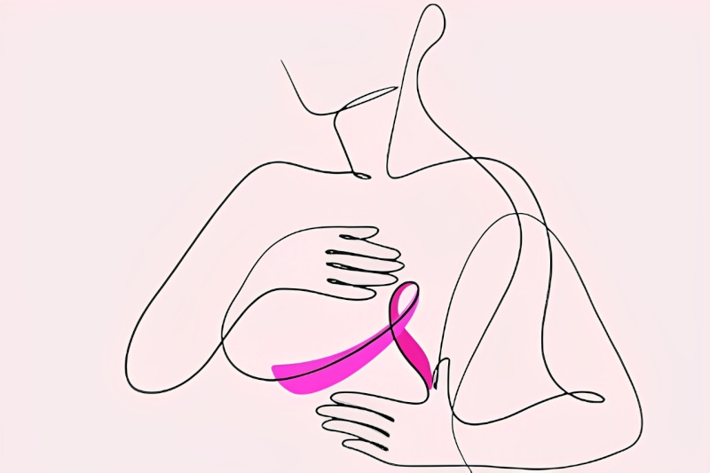
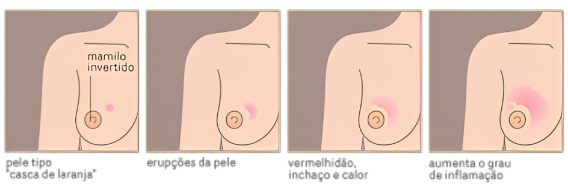

Outubro Rosa
É um movimento internacional de conscientização para o controle do câncer de mama, criado no início da década de 1990 pela Fundação Susan G. Komen for the Cure. A data, celebrada anualmente, tem o objetivo de compartilhar informações e promover a conscientização sobre a doença; proporcionar maior acesso aos serviços de diagnóstico e de tratamento e contribuir para a redução da mortalidade.
Desde 2020, com a pandemia COVID-19, os grupos que atuam em câncer de mama tiveram que repensar suas campanhas do Outubro Rosa e aumentar sua presença virtual. Por meio de intervenções, campanhas e mensagens inovadoras, eles mostraram que a promoção da saúde pública pode assumir várias formas e gerar um forte impacto no acesso à saúde. Qual a melhor forma de adaptar uma campanha? Por que a parceria com outros grupos pode aumentar o alcance das mensagens compartilhadas? Como avaliar o impacto de uma campanha virtual?
Para tentar responder essas questões, em 21/9/2021, a Union for International Cancer Control (UICC) compartilhou estudos de caso de diferentes grupos e regiões para inspirar ideias e compartilhar lições aprendidas nas campanhas de 2020 para aproveitar ao máximo a campanha do Mês de Conscientização do Câncer de Mama deste ano.
No Brasil, em 2018, a Lei nº 13.733
Instituiu o Mês de conscientização sobre o câncer de mama – outubro rosa, período em que devem ser desenvolvidas as seguintes atividades, entre outras: I – iluminação de prédios públicos com luzes de cor rosa; II – promoção de palestras, eventos e atividades educativas; III – veiculação de campanhas de mídia e disponibilização à população de informações em banners , em folders e em outros materiais ilustrativos e exemplificativos sobre a prevenção ao câncer, que contemplem a generalidade do tema.
O Instituto Nacional de Câncer (INCA)
Participa do movimento desde 2010 e promove eventos técnicos, debates e apresentações sobre o assunto, assim como produz materiais e outros recursos educativos para disseminar informações sobre fatores protetores e detecção precoce do câncer de mama.
O câncer de mama é o tipo que mais acomete mulheres em todo o mundo, tanto em países em desenvolvimento quanto em países desenvolvidos. Cerca de 2,3 milhões de casos novos foram estimados para o ano de 2020 em todo o mundo, o que representa cerca de 24,5% de todos os tipos de neoplasias diagnosticadas nas mulheres. As taxas de incidência variam entre as diferentes regiões do planeta, com as maiores taxas nos países desenvolvidos.
Os principais sinais e sintomas suspeitos de câncer de mama são:
Caroço (nódulo), geralmente endurecido, fixo e indolor; pele da mama avermelhada ou parecida com casca de laranja; alterações no bico do peito (mamilo) e saída espontânea de líquido de um dos mamilos. Também podem aparecer pequenos nódulos no pescoço ou na região das axilas.
Saiba também que:
Homens também podem ter câncer de mama. Sim, eles também podem ter câncer de mama, já que têm glândulas mamárias e hormônios femininos, ainda que em quantidade pequena. Justamente por ser mais raro, não existe rastreamento de câncer de mama (ou seja, não há recomendação para fazer a mamografia de rotina), a não ser que cheguem ao médico com alguma queixa na mama. Portanto, o mais importante: que cada homem preste atenção ao seu corpo. Ao primeiro sinal de um caroço na mama e alterações no mamilo, é bom agendar uma consulta com um mastologista. O aumento da mama no homem, ou mesmo o caroço, pode ser só uma ginecomastia – o que é mais comum –, que significa um aumento totalmente benigno da glândula mamária do homem, sem risco para câncer de mama. Acesse aqui o site INCA para conhecer as diretrizes para detectar precocemente o câncer de mama.
Então é isso! Espero que você tenha gostado do pequeno artigo sobre Outubro Rosa e sua importância no Câncer de Mama.